Snakes of Rwanda
56 living snake species are recorded in Rwanda in SnakeList: 19 venomous and 37 non-venomous, from 10 families.
- 56living species
- 10families
Danger to people · tap a number to show only those snakes
Harmful = dangerously venomous + giant constrictors. Harmless = not venomous and not a giant constrictor. Mildly venomous snakes have no serious bites to people documented. Any snake can bite.
These totals count the unique living snake species SnakeList records in Rwanda. A species counts if it is recorded anywhere in the country, so not every snake lives in every part of it.
In SnakeList’s checklist filters
How many of the 56 living species here each filter in the SnakeList app picks out – tap a number to show only those snakes.
Snake family5 types, 10 families
Type
Family
Habitats13 habitat groups
Habitats are estimated from where each snake is recorded and what kind of snake it is, as in SnakeList; a snake can count in several.
Characteristics19 venomous, 1 constrictors
Constrictor and Non-constrictor count only snakes whose family or genus is documented as constricting or not; the rest are not documented.
Other filters4 popular, 7 rare
- 0extinct
Species
Showing 56 species
 African Rock PythonPython sebae
African Rock PythonPython sebae African Shovel-nosed SnakeScaphiophis albopunctatus
African Shovel-nosed SnakeScaphiophis albopunctatus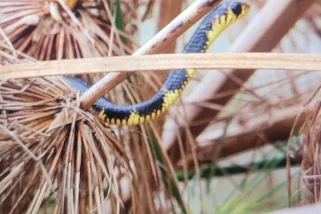
African Tree CobraPseudohaje goldii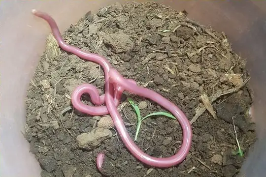
Akagera Gracile Blind SnakeLetheobia akagerae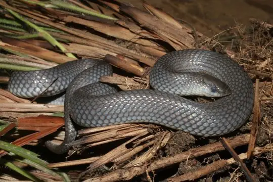
Angolan Shovel-snoutProsymna ambigua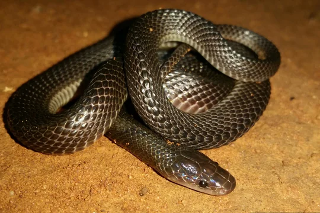
Black File SnakeGracililima nyassae Black-lined Green SnakeHapsidophrys lineatus
Black-lined Green SnakeHapsidophrys lineatus Black-necked Spitting CobraNaja nigricollis
Black-necked Spitting CobraNaja nigricollis BoomslangDispholidus typus
BoomslangDispholidus typus Brown Forest CobraNaja subfulva
Brown Forest CobraNaja subfulva Brown House Snake (fuliginosus)Boaedon fuliginosus
Brown House Snake (fuliginosus)Boaedon fuliginosus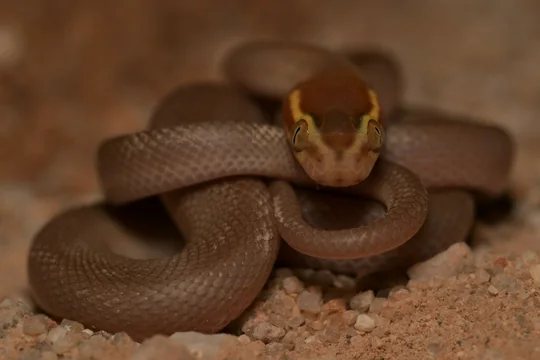
Bug-eyed House SnakeBoaedon mentalis- No photo yetButler's Two-headed SnakeChilorhinophis butleri
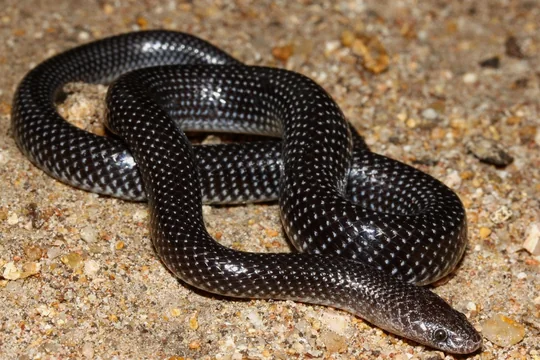
Cape Wolf Snake (capense)Lycophidion capense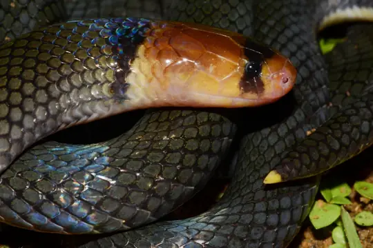
Collared Snake-eaterPolemon collaris Common Egg EaterDasypeltis scabra
Common Egg EaterDasypeltis scabra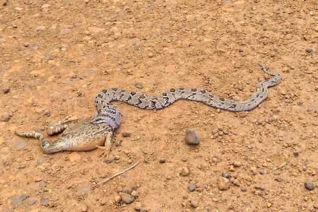
Common Night AdderCausus rhombeatus Common Slug EaterDuberria lutrix
Common Slug EaterDuberria lutrix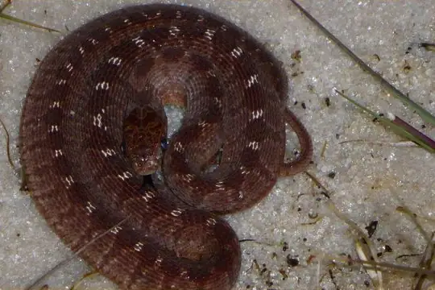
Confusing Egg EaterDasypeltis confusa- No photo yetEastern Snake-eaterPolemon christyi
 Emerald Green SnakePhilothamnus heterodermus
Emerald Green SnakePhilothamnus heterodermus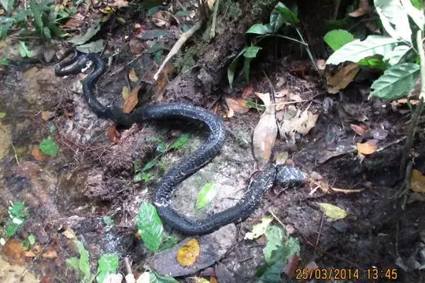
Forest CobraNaja melanoleuca Gaboon ViperBitis gabonica
Gaboon ViperBitis gabonica Great Lakes Bush ViperAtheris nitschei
Great Lakes Bush ViperAtheris nitschei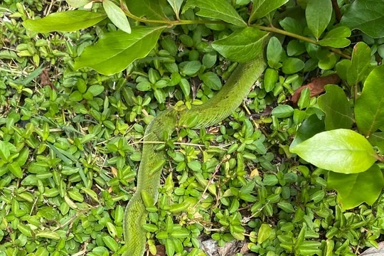
Green Night AdderCausus resimus Green Water SnakePhilothamnus hoplogaster
Green Water SnakePhilothamnus hoplogaster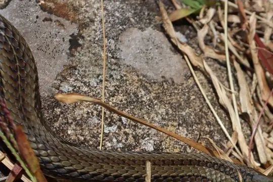
Grey-bellied Grass SnakePsammophylax variabilis Günther's Green Tree SnakeDipsadoboa unicolor
Günther's Green Tree SnakeDipsadoboa unicolor Jackson's Black Tree SnakeThrasops jacksonii
Jackson's Black Tree SnakeThrasops jacksonii Jameson's MambaDendroaspis jamesoni
Jameson's MambaDendroaspis jamesoni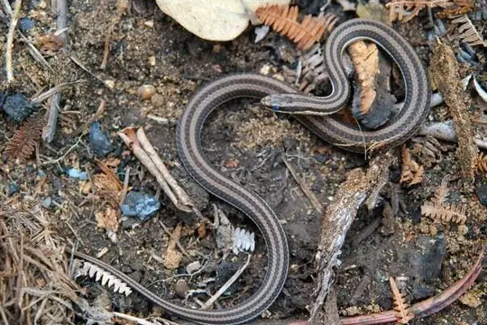
Kenyan Striped SkaapstekerPsammophylax multisquamis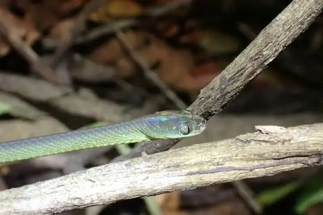
Laurent’s Green Tree-snakeDipsadoboa viridis Loveridge's Garter SnakeElapsoidea loveridgei
Loveridge's Garter SnakeElapsoidea loveridgei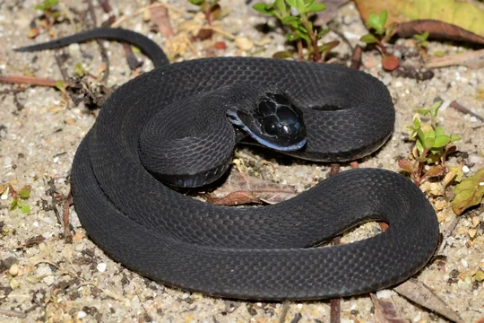
Montane Egg-eaterDasypeltis atra Olive House Snake (olivaceus)Boaedon olivaceus
Olive House Snake (olivaceus)Boaedon olivaceus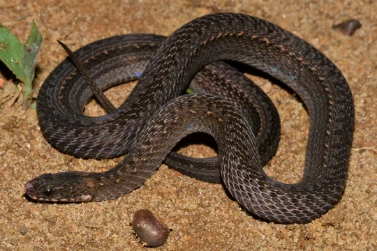
Olive Marsh SnakeNatriciteres olivacea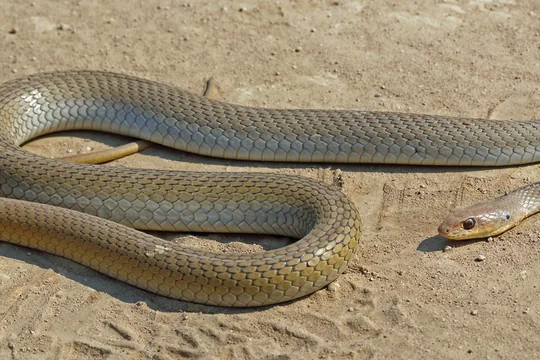
Olive Whip SnakePsammophis mossambicus Ornate Wolf SnakeLycophidion ornatum
Ornate Wolf SnakeLycophidion ornatum Puff AdderBitis arietans
Puff AdderBitis arietans Red-lipped SnakeCrotaphopeltis hotamboeia
Red-lipped SnakeCrotaphopeltis hotamboeia Ringed Water CobraNaja annulata
Ringed Water CobraNaja annulata Rwanda Forest Green SnakePhilothamnus ruandae
Rwanda Forest Green SnakePhilothamnus ruandae Slender Green SnakePhilothamnus heterolepidotus
Slender Green SnakePhilothamnus heterolepidotus Smith's African Water SnakeGrayia smithii
Smith's African Water SnakeGrayia smithii- No photo yetSternfeld's Beaked SnakeLetheobia graueri
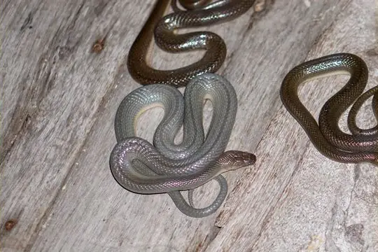
Tanganyika Water SnakeLycodonomorphus bicolor Thirteen-scaled Green SnakePhilothamnus carinatus
Thirteen-scaled Green SnakePhilothamnus carinatus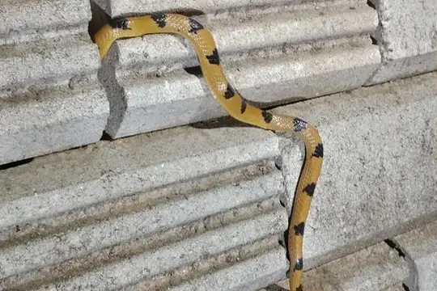
Tiger Cat SnakeTelescopus semiannulatus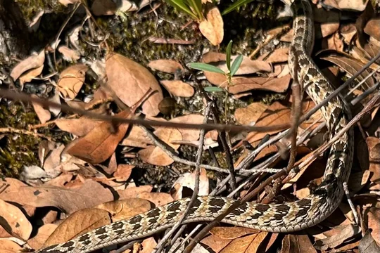
Two-lined Night AdderCausus bilineatus Unicolor File SnakeLimaformosa chanleri
Unicolor File SnakeLimaformosa chanleri Variable Burrowing AspAtractaspis irregularis
Variable Burrowing AspAtractaspis irregularis Weiler's Tree SnakeDipsadoboa weileri
Weiler's Tree SnakeDipsadoboa weileri Western Beaked SnakeRhamphiophis oxyrhynchus
Western Beaked SnakeRhamphiophis oxyrhynchus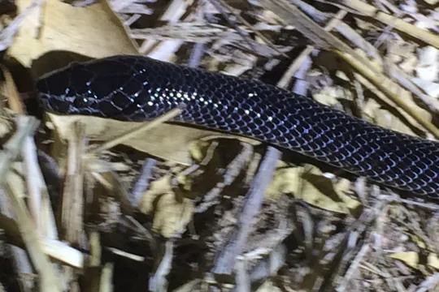
Western Jackson’s Wolf SnakeLycophidion jacksoni Boaedon mendesi
Boaedon mendesi- No photo yetThrasops aethiopissa
No snakes in Rwanda match.
Rwanda’s snakes in numbers
- Families: Colubridae 20, Lamprophiidae 10, Elapidae 7, Viperidae 6, Atractaspididae 4, Psammophiidae 4, Typhlopidae 2, Prosymnidae 1, Pseudoxyrhophiidae 1, Pythonidae 1.
- 1 is recorded in no other country or territory in SnakeList: Akagera Gracile Blind Snake.
How precisely they are recorded
Of the 56 living species recorded in Rwanda, 6 are recorded by province in SnakeList’s data; 50 are recorded only for Rwanda as a whole, so the province pages list them as possible rather than recorded. SnakeList records each species by province, not by exact spot, so a species listed for a province may live in only part of it.
Provinces
The provinces where SnakeList records snakes, with how many living species are recorded in each. Each page has its species, venomous snakes, families, the species found only there, its cities and neighbours.